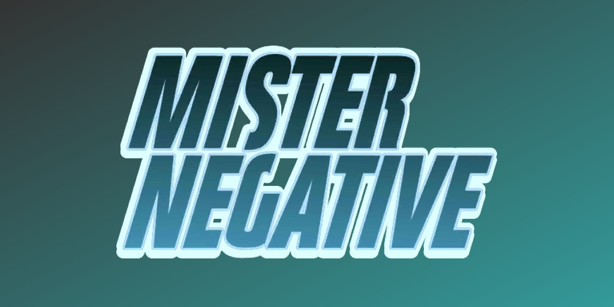
Mister Negative (Martin Li) (Terre-616)
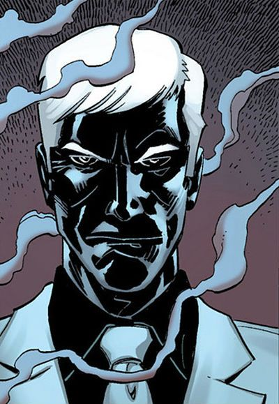
Origines :
L'homme qui allait devenir Mister Negative était membre du gang des Têtes de Serpent en Chine, poussé à la criminalité par l'homme connu sous le nom de Croc d'Argent.
Il faisait passer clandestinement des immigrants chinois aux États-Unis en tant que membre d'équipage du Golden Mountain.
Lorsque le navire vint s'échouer sur les côtes de New-York, il usurpa l'identité de Martin Li, un esclave fujian décédé dans l'accident alors qu'il se rendait en Amérique pour rejoindre sa femme.
"Martin Li" partit ensuite à la recherche de son gang, mais il les trouva tous morts avant d'être capturé par Silvermane, membre de la Maggia, qui le livra de force au chimiste criminel Simon Marshall.
Marshall développait une drogue de synthèse appelée « D-Lite » pour le compte de la Maggia, la testant sur des immigrants clandestins, souvent avec des conséquences mortelles, afin d'en tirer profit pour la famille criminelle.
Miraculeusement, trois victimes kidnappées, Tyrone Johnson, Tandy Bowen et « Martin Li », survécurent aux expériences et réussirent à s'échapper.
La drogue, associée à leur biologie particulière, développa chez-eux des super-pouvoirs liés à la Darkforce et à la Lightforce.
C'est ainsi que Tyrone et Tandy devinrent Cloak & Dagger, et Li devint Mister Negative.
La drogue créa chez Li deux identités distinctes au sein du même corps : la personnalité bienveillante de Martin Li, et celle maléfique de Mister Negative.
Ce dernier se consacra à devenir le caïd de Chinatown, déterminé à anéantir la Maggia pour ce qu'elle lui avait fait.
Afin d'atteindre ses objectifs, l'ancien contrebandier se servit de l'identité de Martin Li pour se construire une nouvelle existence.
Pour le grand public, l'histoire raconte que Martin Li était un immigré clandestin chinois qui tentait de rejoindre sa femme en Amérique.
En Chine, il dirigeait une usine, mais faute de moyen pour corrompre le Parti communiste, il ne put développer son entreprise et fut contraint de quitter le pays.
Il prit ensuite la mer à bord du Golden Mountain, qui fut pris dans une terrible tempête.
L'équipage abandonna le navire, laissant les captifs seuls à bord lorsque le bateau fit naufrage.
Li fut le seul survivant et consacra les années suivantes à bâtir une grande fortune afin d'aider les plus démunis.
Évidemment, tout le monde ignorait sa réelle nature ainsi que sa double-identité de criminelle avec Mister Negative.

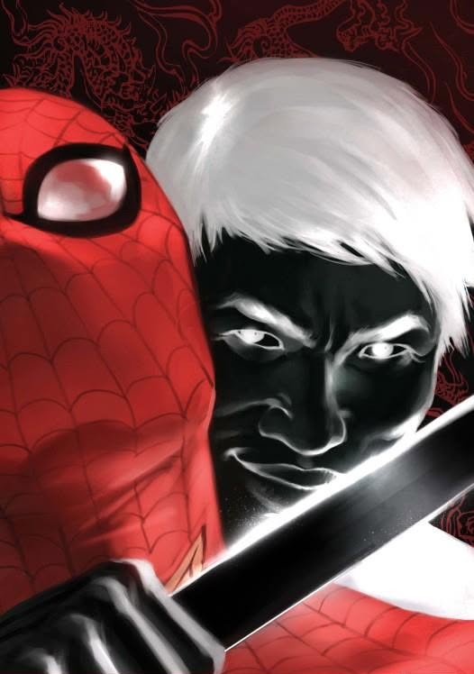
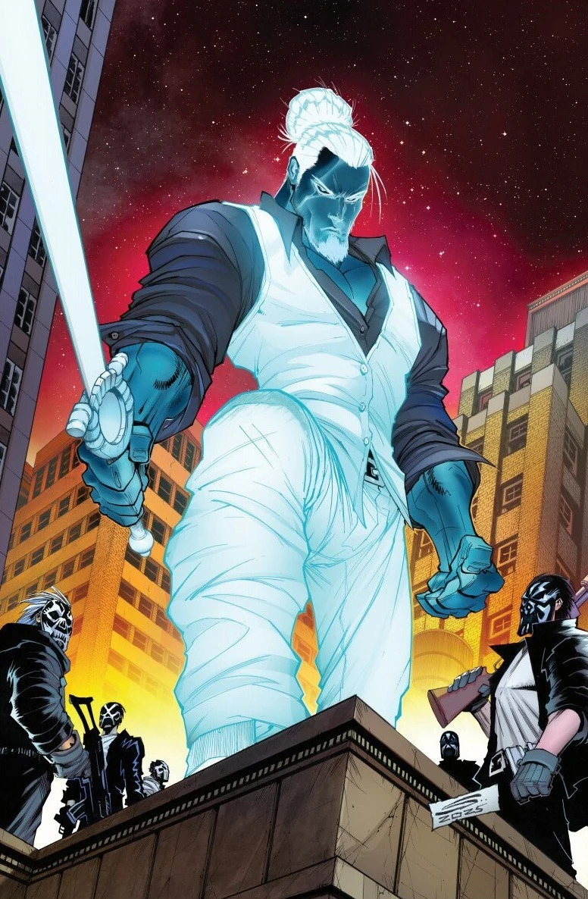
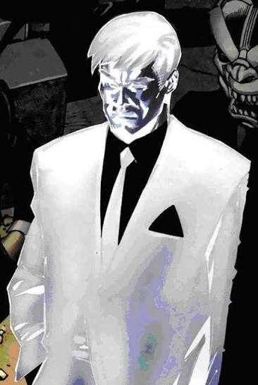
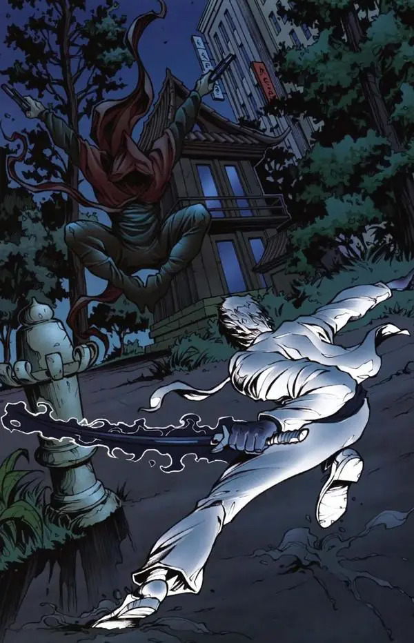
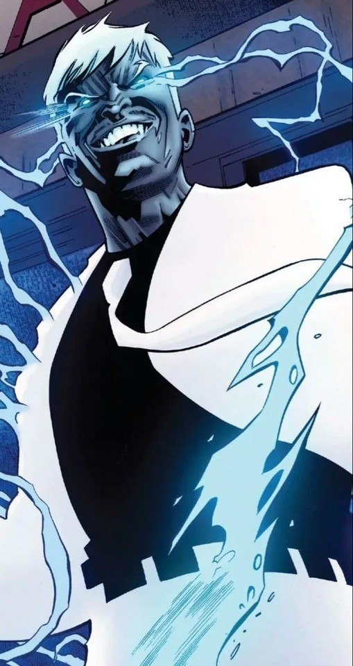
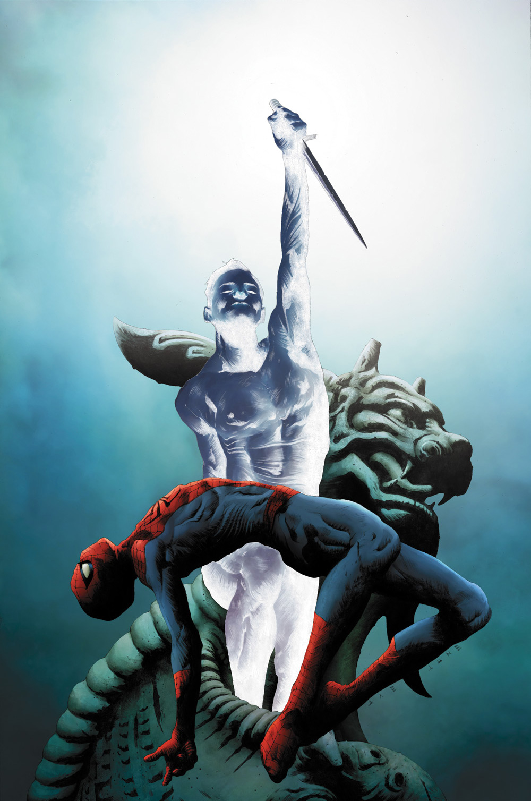
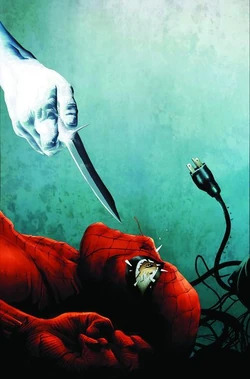
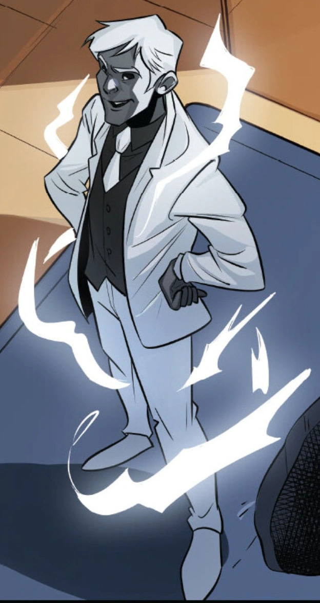
Capacités :
Les capacités de Mister Negative proviennent d'une exposition à une forme d'énergie liée à la Force Obscure suite à des expériences menées sur lui.
Sous cette forme, il possède un pouvoir de corruption mentale qu'il peut activer simplement en touchant une personne.
Il est alors capable d'inverser sa personnalité, d'amplifier ses pulsions négatives, d'augmenter ses capacités physiques ainsi que de les rendre totalement loyales envers lui.
Les victimes prennent alors une apparence « négative » avec la peau sombre et les cheveux blancs.
Ce pouvoir est particulièrement efficace sur les personnes foncièrement bonnes, car la corruption inverse totalement leur personnalité.
Il a également un contrôle sur la Darkforce, qui lui permet de charger des armes en énergie noire et d'augmenter leur puissance destructrice.
Sous cette forme, il possède également des réflexes surhumains, une excellent agilité ainsi qu'une force physique nettement développée, ce qui fait de lui un ennemi extrêmement dangereux même sans armes.
Sous son apparence de Martin Li, ses pouvoirs sont alors liés à la Lightforce, ce qui lui donne la capacité de guérir n'importe qui.
Il est capable de guérir les maladies, d'accélérer la guérison de blessures et de renforcer le système immunitaire.
On l'a notamment vu être capable de guérir Eddie Brock de son cancer, bien que cet événement ait donné naissance au symbiote Anti-Venom.

Apparence :
Mister Negative possède une apparence immédiatement reconnaissable, inspirée d'un négatif photographique.
Sa peau est d'un bleu profond, presque noir, et ses cheveux et sourcils sont d'un blanc éclatant.
Ses yeux deviennent également blancs et lumineux, avec des pupilles souvent absentes ou peu visibles.
Il porte presque toujours un costume trois-pièces composé d'une veste, d'un gilet, d'une chemise et d'un pantalon d'un blanc immaculé, ainsi qu'une cravate très sombre.
Son corps dégage souvent une aura composée d'énergie ou de fumée noire rappelant de l'encre qui se répand, ainsi que des éclairs d'énergie lorsqu'il utilise ses pouvoirs.
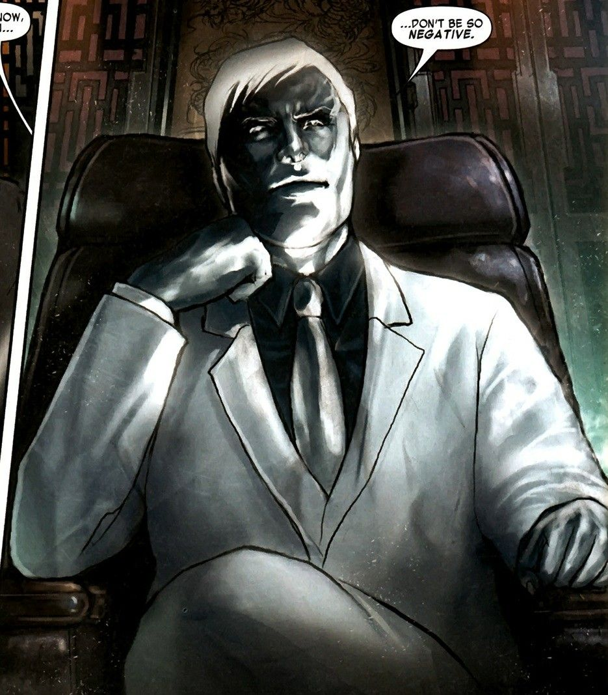
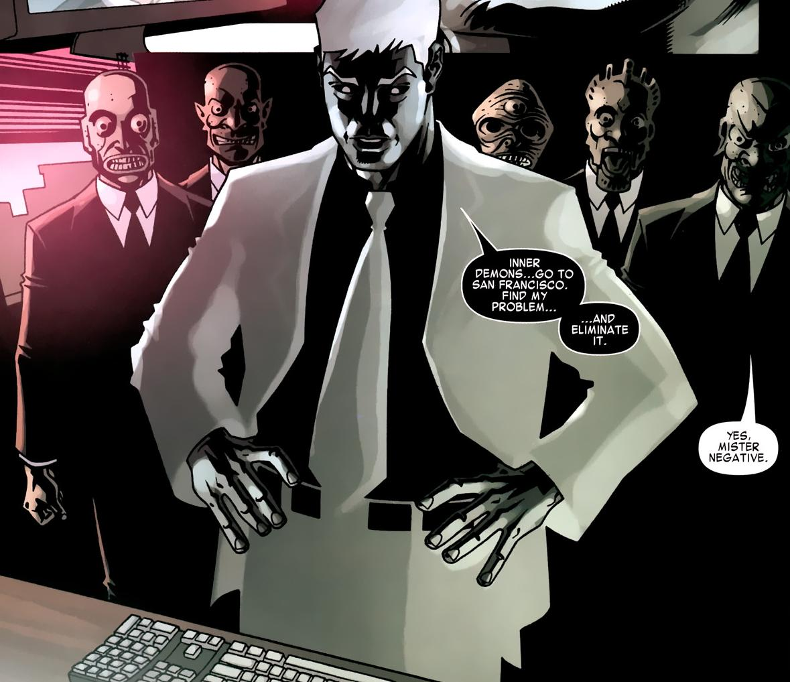
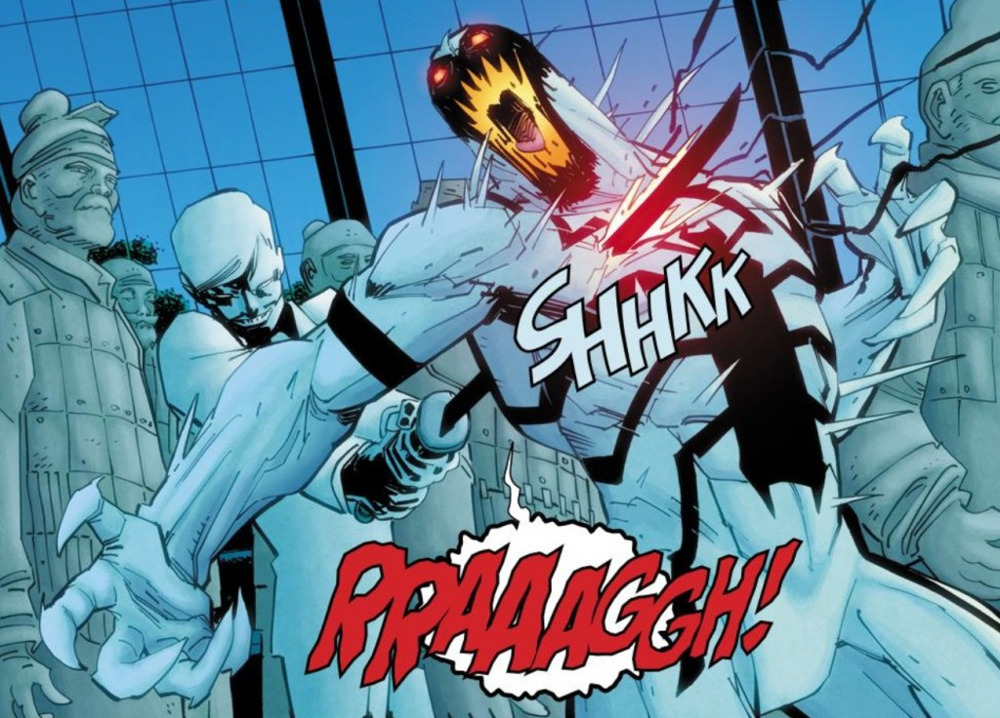
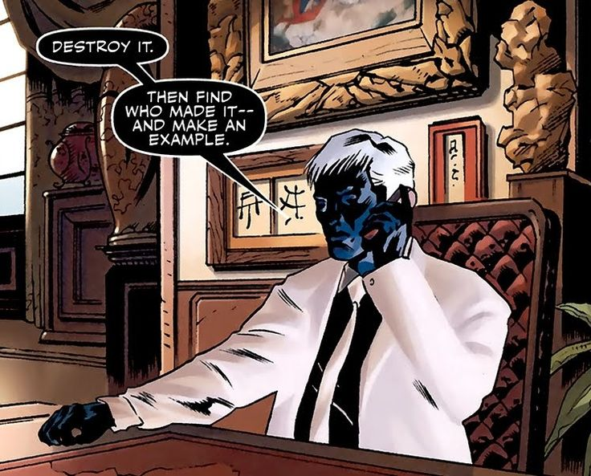
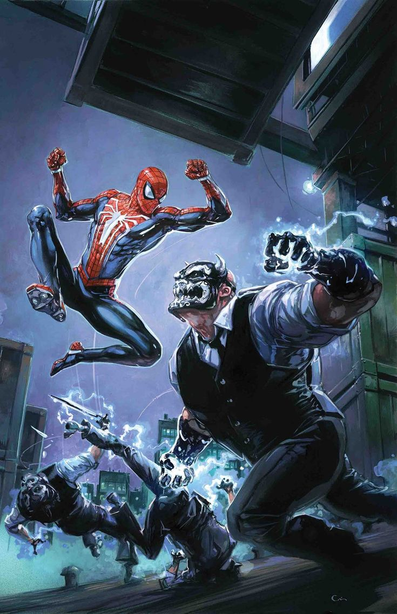
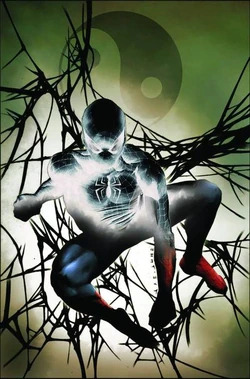
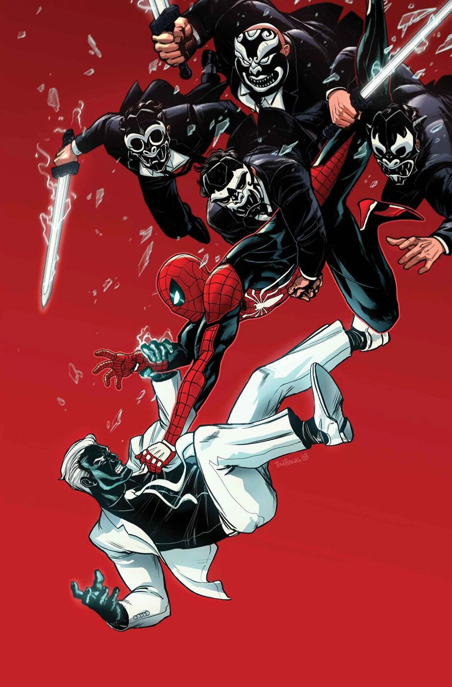